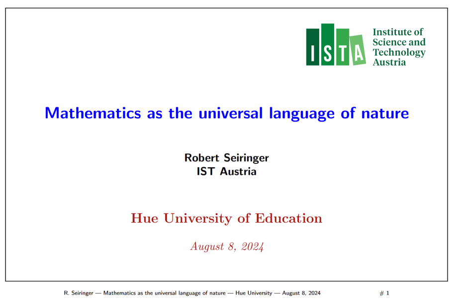
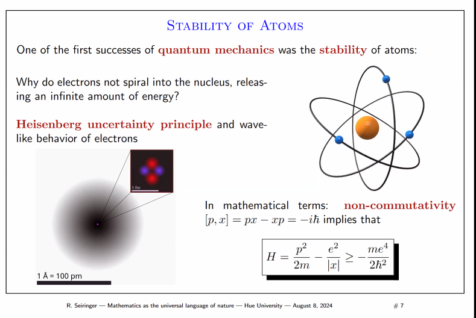
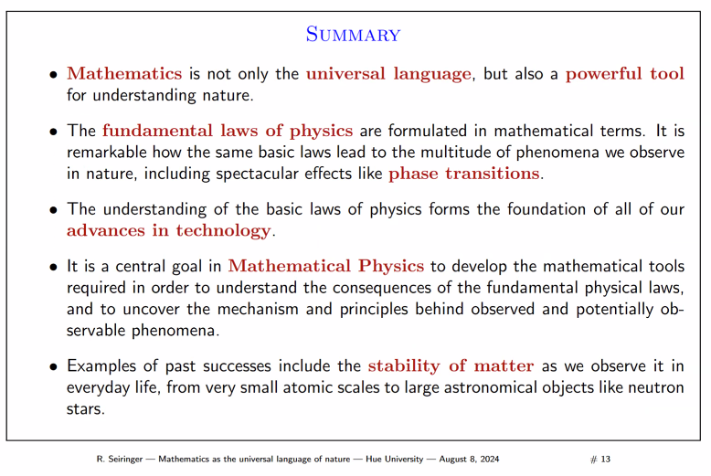
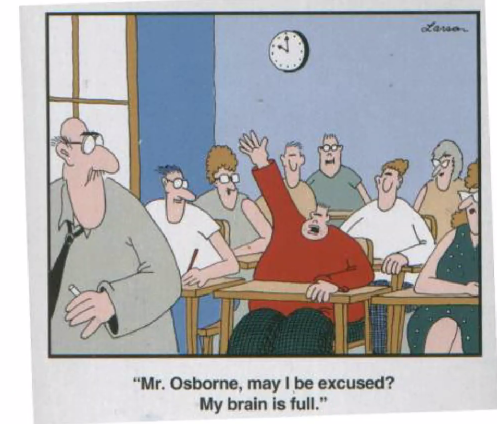

mình nghe bài nói chuyện “Mathematics as the Universal Language of Nature” của R. Seiringer, tổ chức tại Trường Đại học Sư phạm Huế, ngày 8 tháng 8 năm 2024. Dưới đây là note của mình.

Robert là 1 giáo sư chuyên, đầu ngành về Toán và Vật lý, từng giảng dạy tại Princeton, hiện nay công tác tại Viện Kỹ Thuật và Khoa học của Áo. Bài giảng này của giáo sư nhằm nêu bật vẻ đẹp của Toán và Vật lý, dùng Toán để giải thích tự nhiên.
History
- Newton: calculus, motion of earth around the sun, theory of gravity;
- Fourier: Fourier series to understand hear transfer & conduction (also green house effect!);
- Rieman: thuyết tương đối tổng quát, lý thuyết trường lượng tử, lý thuyết dây.
Jean-Baptiste Joseph Fourier, nhà toán học và vật lý học người Pháp, là người đầu tiên mô tả hiệu ứng nhà kính (greenhouse effect) vào năm 1824. Hãy giải thích về khái niệm này:
Định nghĩa: Hiệu ứng nhà kính của Fourier đề cập đến quá trình mà khí quyển của Trái Đất giữ nhiệt, làm cho bề mặt hành tinh ấm hơn so với trường hợp không có khí quyển.
Cơ chế cơ bản:
Bức xạ mặt trời đi qua khí quyển và được hấp thụ bởi bề mặt Trái Đất.
Trái Đất phát ra bức xạ hồng ngoại (nhiệt).
Một phần bức xạ này bị các khí nhà kính trong khí quyển hấp thụ và tái phát ra theo mọi hướng.
Quá trình này giữ nhiệt trong khí quyển, làm tăng nhiệt độ trung bình của Trái Đất.
- Đóng góp của Fourier:
- Fourier nhận ra rằng khí quyển đóng vai trò như một “tấm chăn”, giữ nhiệt cho Trái Đất.
- Ông so sánh quá trình này với cách hoạt động của nhà kính trồng cây.
- Tầm quan trọng:
- Hiệu ứng nhà kính tự nhiên làm cho Trái Đất có thể ở được, duy trì nhiệt độ trung bình khoảng 15°C thay vì -18°C nếu không có nó.
- Hiểu biết này đặt nền móng cho nghiên cứu về biến đổi khí hậu hiện đại.
- Phát triển sau này:
- John Tyndall (1859) xác định các khí cụ thể gây ra hiệu ứng nhà kính.
- Svante Arrhenius (1896) tính toán định lượng ảnh hưởng của CO2 đối với nhiệt độ Trái Đất.
- Khác biệt với hiểu biết hiện đại:
- Fourier chưa biết về các khí nhà kính cụ thể hoặc cơ chế phân tử của quá trình này.
- Hiểu biết hiện đại về hiệu ứng nhà kính phức tạp hơn nhiều, bao gồm các phản hồi và tương tác khí hậu.
- Ý nghĩa lịch sử:
- Công trình của Fourier đặt nền móng cho khoa học khí hậu hiện đại và hiểu biết của chúng ta về cách Trái Đất duy trì nhiệt độ.
Hiệu ứng nhà kính của Fourier là một ví dụ tuyệt vời về cách một khái niệm khoa học cơ bản có thể dẫn đến những hiểu biết sâu sắc về hệ thống Trái Đất và cuối cùng ảnh hưởng đến chính sách toàn cầu về biến đổi khí hậu.
Math Desc. of Laws of Nature
the unreasonable effectiveness of math in the natural sciences (Eugene P. Wigner), formulation of the basic laws of nature in mathematically precise terms.
ví dụ: Phương trình Schrodinger -> áp dụng từ atomic nuclei to neutron stars.
Phương trình Schrödinger là một phương trình vi phân từng phần cơ bản trong cơ học lượng tử, được đặt tên theo nhà vật lý Erwin Schrödinger. Nó mô tả sự biến đổi theo thời gian của hàm sóng của một hệ lượng tử. Hàm sóng này chứa đựng tất cả thông tin về trạng thái của hệ thống, bao gồm cả vị trí, động lượng và các tính chất khác.
Ý nghĩa Vật lý
- Mô tả sự chuyển động của các hạt ở cấp độ lượng tử: Nếu trong cơ học cổ điển, chúng ta sử dụng các phương trình Newton để mô tả chuyển động của các vật thể, thì trong cơ học lượng tử, phương trình Schrödinger đóng vai trò tương tự. Nó cho phép chúng ta tính toán xác suất tìm thấy một hạt tại một vị trí nào đó tại một thời điểm nhất định.
- Hàm sóng: Hàm sóng không phải là một đại lượng vật lý có thể đo trực tiếp, mà là một hàm toán học phức. Bình phương mô đun của hàm sóng tại một điểm trong không gian cho ta xác suất tìm thấy hạt tại điểm đó.
Ứng dụng của Phương Trình Schrödinger. Phương trình Schrödinger có ứng dụng rộng rãi trong nhiều lĩnh vực của vật lý, bao gồm:
- Vật lý nguyên tử: Dùng để mô tả cấu trúc của nguyên tử, phân tử và tính toán các mức năng lượng của chúng.
- Vật lý hạt nhân: Áp dụng để nghiên cứu cấu trúc của hạt nhân nguyên tử và các quá trình tương tác hạt nhân.
- Vật lý chất rắn: Được sử dụng để mô tả các tính chất điện, từ, và quang học của vật liệu.
- Vật lý thiên văn: Áp dụng để nghiên cứu các vật thể thiên văn như sao, tinh vân và lỗ đen.
Tại Sao Phương Trình Schrödinger Áp Dụng Rộng Rãi?
- Tính phổ quát: Phương trình Schrödinger là một phương trình cơ bản, áp dụng cho mọi hệ lượng tử, từ các hạt đơn lẻ đến các hệ phức tạp như nguyên tử, phân tử và vật liệu rắn.
- Độ chính xác cao: Các kết quả tính toán dựa trên phương trình Schrödinger đã được kiểm nghiệm thực nghiệm một cách chính xác cao, khẳng định tính đúng đắn của lý thuyết lượng tử.
- Khả năng dự đoán: Phương trình Schrödinger cho phép chúng ta dự đoán kết quả của các thí nghiệm lượng tử, từ đó mở ra nhiều ứng dụng trong công nghệ hiện đại.
Từ Nguyên Tử đến Sao Neutron
- Nguyên tử: Phương trình Schrödinger được sử dụng để mô tả sự chuyển động của electron xung quanh hạt nhân, từ đó giải thích quang phổ nguyên tử và các tính chất hóa học của các nguyên tố.
- Hạt nhân: Phương trình Schrödinger (ở dạng tương đối tính) được sử dụng để mô tả cấu trúc của hạt nhân nguyên tử, các tương tác giữa các nucleon (proton và neutron) bên trong hạt nhân.
- Sao neutron: Sao neutron là những ngôi sao đã chết, cực kỳ đặc, chủ yếu gồm các neutron. Mặc dù cấu trúc bên trong của sao neutron rất phức tạp, nhưng các nhà vật lý vẫn sử dụng các phiên bản mở rộng của phương trình Schrödinger để mô tả hành vi của vật chất trong điều kiện cực đoan bên trong sao neutron.
Tóm lại, phương trình Schrödinger là một công cụ toán học mạnh mẽ, cho phép chúng ta hiểu sâu sắc về thế giới lượng tử. Sự thành công của phương trình này trong việc giải thích các hiện tượng từ cấp độ nguyên tử đến cấp độ vũ trụ đã khẳng định vị trí trung tâm của nó trong nền tảng của vật lý hiện đại.
Technology Development
How quantum mechanic works, it’s understanding from human lies at the heart of technological advances in the past century
- phone
- computer
- satellite
- …
Complexity
the more basic physical laws are stated, the more complex be allowed for calculating their solution.
eg: description of the air in this lecture room, there will me rought ly 10^30 parameters
eg: phase transitions -> one small change in system’s params lead to a masive change of its behaviour.
read more: “More is Different - broken symertry and the nature of hierarchical structure of science” – P. W. Anderson – (link).
Aims of Mathematical Physics
- dev new math tools, allowing deduction of …
- improve understanding of physical systems, dưới nhiều góc nhìn hơn.
eg: fruitful interaction, Toán là nền tảng, Lý thể hiện các câu hỏi một cách tự nhiên để mang lại sự phát triển cho sự khám phá Toán học.
Stability of Atoms
Tại sao electron không spiral vào nguyên tử, giải phóng một năng lượng vô hạn.
- Heisenberg uncertainty principle
- In math, non-commutativity implies…

? electromagtic radiation
Bức xạ điện từ là một dạng năng lượng truyền đi dưới dạng sóng điện từ. Sóng điện từ này bao gồm cả trường điện từ và trường từ trường dao động vuông góc với nhau và vuông góc với phương truyền sóng.
Đặc điểm chính của bức xạ điện từ:
- Tốc độ: Tất cả các sóng điện từ đều truyền đi với tốc độ ánh sáng trong chân không (khoảng 3 x 10^8 m/s).
- Tần số và bước sóng: Các sóng điện từ khác nhau bởi tần số (số lần dao động trong một giây) và bước sóng (khoảng cách giữa hai đỉnh sóng liên tiếp).
- Phổ điện từ: Phổ điện từ là một dải liên tục các loại bức xạ điện từ, từ sóng vô tuyến có bước sóng dài đến tia gamma có bước sóng ngắn.
- Tính chất sóng-hạt lưỡng tính: Bức xạ điện từ thể hiện cả tính chất sóng (giao thoa, nhiễu xạ) và tính chất hạt (hiệu ứng quang điện).
Các loại bức xạ điện từ phổ biến:
- Sóng vô tuyến: Sử dụng trong truyền thông, radio, truyền hình.
- Vi sóng: Sử dụng trong lò vi sóng, radar.
- Tia hồng ngoại: Tạo ra nhiệt, được sử dụng trong điều khiển từ xa, thiết bị nhìn đêm.
- Ánh sáng khả kiến: Ánh sáng mà mắt người có thể nhìn thấy.
- Tia tử ngoại: Sử dụng trong khử trùng, sản xuất vitamin D.
- Tia X: Sử dụng trong y tế để chụp X-quang.
- Tia gamma: Có năng lượng rất cao, được sử dụng trong điều trị ung thư.
Ứng dụng của bức xạ điện từ: Bức xạ điện từ có rất nhiều ứng dụng trong cuộc sống hàng ngày và trong các lĩnh vực khoa học, công nghệ. Ví dụ:
- Truyền thông: Điện thoại, truyền hình, internet.
- Y tế: Chụp X-quang, điều trị ung thư.
- Công nghiệp: Hàn, cắt kim loại.
- Quân sự: Radar, sóng âm.
Tính không giao hoán là một khái niệm quan trọng trong toán học, đặc biệt trong đại số trừu tượng. Nó mô tả một tính chất của các phép toán, khi mà việc đổi chỗ các đối tượng trong phép toán đó lại cho kết quả khác nhau.
Ví dụ minh họa:
- Phép nhân số: Phép nhân số là một phép toán giao hoán. Ví dụ:
2 x 3 = 3 x 2. - Phép trừ số: Phép trừ số không phải là phép toán giao hoán. Ví dụ:
5 - 3 ≠ 3 - 5. - Phép nhân ma trận: Phép nhân ma trận nói chung không giao hoán. Tức là, nếu A và B là hai ma trận, thì thường
AB ≠ BA.
Ứng dụng của tính không giao hoán:
- Đại số trừu tượng: Tính không giao hoán xuất hiện trong nhiều cấu trúc đại số như nhóm, vành, trường.
- Vật lý lượng tử: Trong cơ học lượng tử, các toán tử đại diện cho các đại lượng vật lý thường không giao hoán. Điều này dẫn đến nguyên lý bất định Heisenberg, một trong những nguyên lý cơ bản của vật lý lượng tử.
- Khoa học máy tính: Tính không giao hoán xuất hiện trong các cấu trúc dữ liệu như hàng đợi, ngăn xếp, và trong các ngôn ngữ lập trình.
Ý nghĩa của tính không giao hoán:
- Thứ tự quan trọng: Khi thực hiện các phép toán không giao hoán, thứ tự các đối tượng đóng vai trò quyết định trong việc xác định kết quả.
- Mô hình hóa các hệ thống phức tạp: Tính không giao hoán cho phép mô hình hóa các hệ thống phức tạp trong đó các yếu tố tương tác với nhau theo một cách không đối xứng.
Ví dụ cụ thể trong vật lý lượng tử:
Trong cơ học lượng tử, vị trí (x) và động lượng (p) của một hạt là hai đại lượng vật lý không giao hoán. Quan hệ không giao hoán này được biểu diễn bởi công thức:
\([x, p] = xp - px = iħ\)
Trong đó:
- \(x\) là toán tử vị trí
- \(p\) là toán tử động lượng
- \(ħ\) là hằng số Planck rút gọn
- \(i\) là đơn vị ảo
Công thức trên cho thấy, việc đo vị trí và động lượng của một hạt cùng một lúc sẽ có độ chính xác bị giới hạn. Đây chính là nội dung của nguyên lý bất định Heisenberg.
Tóm lại, tính không giao hoán là một khái niệm quan trọng trong toán học và vật lý, giúp chúng ta hiểu rõ hơn về sự tương tác giữa các đối tượng và các hệ thống phức tạp.
Stability of Matter
nếu nguyên tử là ổn định, điều gì xảy ra nếu chúng ta assemble chúng lại với nhau, như 10^30 nguyên tử trong 1 viên gạch. việc 1 viên gạch tại sao lớn như vậy, chứ không thể đặc hơn, khó có thể coi là hiển nhiên, và uncertainty principle ko thể tự mình giải thích.
extensitivity: electrons là fermions, thỏa Pauli exclusion principle.
why a brick is a brick?
book recommendation: “Stability of Matter in Quantum Mechanics”
These are two fundamental types of particles in physics. They differ in their quantum properties.
- Fermions: These particles obey the Pauli Exclusion Principle, which means that no two identical fermions can occupy the same quantum state simultaneously. Examples of fermions include electrons, protons, and neutrons.
- Bosons: Unlike fermions, multiple bosons can occupy the same quantum state. This property is essential for phenomena like superconductivity and laser light. Examples of bosons include photons (particles of light) and the Higgs boson.
Gravitational (In) Stability of Stars
scale up to Stars, where the gravitation becomes a major factor -> can be taken in to account.
Chandrasekhar limit - for the maximun mass of stable white dwarf (amounts roughly 1.4 solar masses)
Schrodinger equation can be applied to a huge range of scalces, from atoms to stars!
Phase Transitions
phương trình cơ bản có dạng đơn giản, nhưng lời giải có thể ở rất nhiều dạng do có rất nhiều biến và tham số.
ví dụ như nước, có thể khí, lỏng và rắn - phase transitions.
More Phase Transitions
- magnetism;
- traffic jams: hociminh city, tiny change can make huge effect?;
- superfluidity (siêu chảy, một trạng thái “kỳ lạ” - exotic của vật chất);
- superconductivity (siêu dẫn).
Định nghĩa siêu chảy: Siêu chảy là trạng thái của vật chất, trong đó chất lỏng có độ nhớt bằng không và chảy mà không có ma sát. Điều này xảy ra ở nhiệt độ cực thấp, gần bằng không tuyệt đối.
Đặc điểm chính:
- Không có ma sát nội: Chất lỏng siêu chảy có thể chảy mà không mất năng lượng.
- Hiệu ứng phun tia: Có thể leo lên thành bình chứa.
- Dẫn nhiệt vô hạn: Truyền nhiệt cực kỳ hiệu quả.
- Xoáy lượng tử: Tạo ra các xoáy với động lượng góc lượng tử hóa.
- Ví dụ về chất siêu chảy:
- Helium-4 lỏng dưới 2.17 K (điểm lambda).
- Helium-3 lỏng dưới khoảng 0.0025 K.
Tại sao gọi là “exotic” (kỳ lạ):
- Hiếm gặp trong tự nhiên:
- Chỉ xuất hiện ở nhiệt độ cực thấp, hiếm khi gặp trong điều kiện tự nhiên.
- Vi phạm trực giác thông thường:
- Chảy mà không có ma sát, trái ngược với hầu hết các chất lỏng thông thường.
- Có thể “leo” ra khỏi bình chứa, dường như vi phạm trọng lực.
- Hành vi lượng tử vĩ mô:
- Hiển thị các hiệu ứng lượng tử ở quy mô có thể quan sát được.
- Thể hiện tính chất sóng-hạt của vật chất ở mức độ lớn.
- Liên quan đến vật lý cơ bản:
- Nghiên cứu siêu chảy giúp hiểu sâu hơn về cơ học lượng tử và vật lý trạng thái ngưng tụ.
- Ứng dụng tiềm năng độc đáo:
- Có thể được sử dụng trong các thiết bị làm lạnh siêu dẫn và các ứng dụng công nghệ cao khác.
Tóm lại, siêu chảy được coi là “exotic” vì nó thể hiện các tính chất kỳ lạ, hiếm gặp và vi phạm trực giác thông thường về cách chất lỏng hoạt động. Nó là một ví dụ về cách các hiệu ứng lượng tử có thể biểu hiện ở quy mô vĩ mô, làm cho nó trở thành một chủ đề thú vị và quan trọng trong vật lý hiện đại.
Định nghĩa: Siêu dẫn là trạng thái của vật chất trong đó điện trở suất của vật liệu giảm xuống bằng không và từ trường bị đẩy ra khỏi vật liệu (hiệu ứng Meissner) khi nhiệt độ giảm xuống dưới một nhiệt độ tới hạn nhất định.
Đặc điểm chính:
Điện trở bằng không: Dòng điện có thể chảy mà không mất năng lượng.
Hiệu ứng Meissner: Từ trường bị đẩy ra khỏi vật liệu siêu dẫn.
Nhiệt độ tới hạn (Tc): Nhiệt độ mà dưới đó vật liệu trở thành siêu dẫn.
- Loại siêu dẫn:
Siêu dẫn loại I: Thường là kim loại nguyên chất, chuyển đột ngột sang trạng thái siêu dẫn.
Siêu dẫn loại II: Thường là hợp kim hoặc hợp chất phức tạp, có hai nhiệt độ tới hạn và có thể duy trì trạng thái siêu dẫn trong từ trường mạnh hơn.
- Cơ chế:
- Lý thuyết BCS (Bardeen-Cooper-Schrieffer): Giải thích siêu dẫn thông qua sự hình thành các cặp Cooper (electron ghép đôi).
- Siêu dẫn nhiệt độ cao: Cơ chế chưa được hiểu đầy đủ, là một lĩnh vực nghiên cứu đang phát triển.
- Ứng dụng:
- Nam châm siêu dẫn mạnh cho MRI và máy gia tốc hạt.
- Máy dò SQUID (Superconducting Quantum Interference Device) để đo từ trường cực nhỏ.
- Tiềm năng trong máy tính lượng tử và truyền tải điện không tổn thất.
- Thách thức:
- Tìm kiếm vật liệu siêu dẫn ở nhiệt độ cao hơn, lý tưởng là ở nhiệt độ phòng.
- Hiểu rõ hơn về cơ chế của siêu dẫn nhiệt độ cao.
- Lịch sử và phát triển:
- Phát hiện năm 1911 bởi Heike Kamerlingh Onnes trong thủy ngân ở 4.2K.
- Lý thuyết BCS được đề xuất năm 1957.
- Siêu dẫn nhiệt độ cao được phát hiện năm 1986 bởi Bednorz và Müller.
Siêu dẫn là một lĩnh vực nghiên cứu đang phát triển mạnh mẽ trong vật lý hiện đại, với tiềm năng ứng dụng rộng rãi trong công nghệ và kỹ thuật.
Summary
- toán không phải là ngôn ngữ vũ trụ, nhưng rất mạnh mẽ để giải thích tự nhiên;
- các luật vật lý cơ bản được diễn giải bằng ngôn ngữ toán, rất thú ví là nhiều định luật vật lý cơ bản lại giải thích được rất nhiều hiện tượng khác nhau, như chuyển thể;
- việc hiểu các định luật vật lý tạo ra các tiến bộ công nghệ;
- mục tiêu của toán vật lý là phát triển các công cụ toán để hiểu các hệ quả của các định luật vật lý cơ bản và khai phá các cơ chế cũng như nguyên lý đằng sau các hiện tượng quan sát được;
- một trong các thành tựu của toán vật lý chính là nghiên cứu về tính ổn định của vật chất.

q&a and outro
- hamiltonian mechanics;
- non-commutativity;
- fermions, fundamental particle, bosons, 4-dimensions space;
- schrodinger equation, lagrangian;
- phase transitions, is this similar to the butterfly effect (notion of chaos)? eg double pendulum;
- when was quantum mechanics been cared;
- in classical physics, can predict trajectory; but why in quantum mechanics, we can not. (electron does not have definite position, read more on bell inequalities);
- given the particles moving very fast, will they exchange the energy (read more on kinetic energy);
- standing wave.
